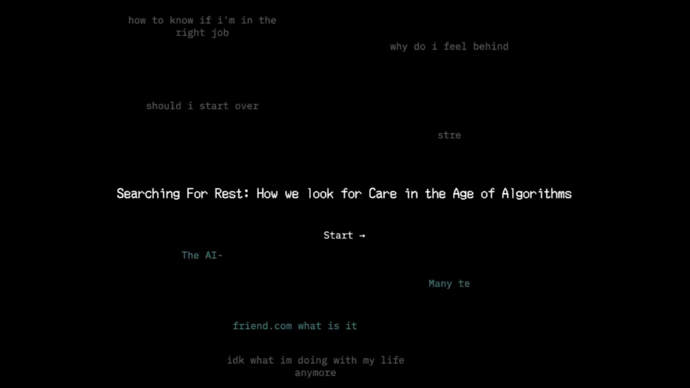

2025 - Data Viz - P5.js
A scrollytelling experience exploring how people seek care in the age of algorithms
Process

Primary research involved qualitative deep-dive interviews with 27 individuals alongside targeted surveys investigating modern digital coping habits and real search logs. The qualitative data revealed that these isolated rituals are driven by a distinct psychological mechanic: compensatory control. When environmental uncertainty spikes, small, immediate digital actions—like typing a query—help users restore a fleeting sense of internal order, a behavior amplified by the internet's convenience culture. Furthermore, 48% of participants noted their emotional searches were deeply bound to feelings of guilt or self-criticism, while 40% cited an urgent desire to regain control or navigate immense external pressures from school or labor environments.

Moodboarding the look of the experience to capture what searching feels like.

The language and experience was designed to directly address the goals of two primary stakeholders: engaging critical technical navigators and emotional AI researchers

Initially, the interactions were purely fill in the blank questions, but it lacked narrative.

Pivoted to a scrollytelling format to expand narrative, but felt it lacked interactive moments for the user to engage with.

Went on to combine storytelling structure with interactive moments to engage users. Also decided to complement the work with a physical component to memorialize experience.
Outcomes
The execution of Searching for Care delivered a fully interactive web experience that successfully reframes emotional searching as an act of shared humanity. By choosing code-level constraint over automated technical spectacle, the project serves as a powerful counter-artifact to frictionless enterprise optimization. The resulting piece demonstrates that our most vulnerable digital habits can be creatively restructured into supportive platforms for mutual connection, providing a proven, human-centered blueprint for future introspective design systems.


